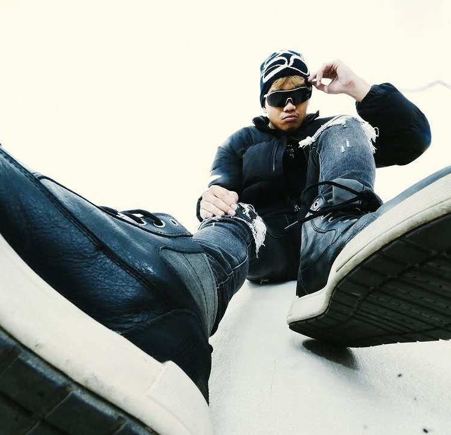

เกิดและเติบโตในเกาะภูเก็ต AYYOBAX เริ่มสร้างเสียงดนตรีในห้องอัดกลางบ้านที่มีทั้งพ่อและแม่อยู่ตั้งแต่อายุ 15 — แค่แล็ปท็อป ไมค์ และบางสิ่งที่ต้องการจะพูด ดนตรีของเขาผสมผสานความดิบของ Hip-Hop ยุคเก่ากับอารมณ์ของ R&B ร่วมสมัย ส่งผ่านเสียงที่รู้สึกเหมือนคำสารภาพยามเที่ยงคืน ทุกเพลงคือบทหนึ่ง ทุกอัลบั้มคือนิยาย ด้วย 32 ผลงานและกว่า 300 ล้านสตรีมทั่วทุกแพลตฟอร์ม เขาสร้างฐานแฟนคลับที่ภักดีที่สุดแห่งหนึ่งในวงการฮิปฮอปเอเชียตะวันออกเฉียงใต้ — ด้วยตัวเองทั้งหมด
